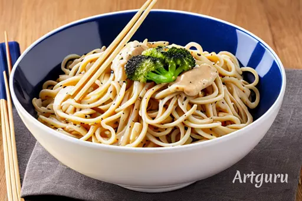

學號:91034127 姓名:游博淵 第三頁:白醬義大利麵
白醬義大利麵
材料：
- 義大利麵：約250克
- 奶油：2湯匙
- 麵粉：2湯匙
- 牛奶：2杯
- 鹽：1/2茶匙
- 黑胡椒：1/4茶匙
- 芝士（帕馬森或帕達諾），磨碎：1/2杯
- 選擇性：蒜末、洋蔥末、新鮮香草等（根據個人喜好）
步驟：
- 煮義大利麵
- 根據包裝上的說明，在鹽水中煮熟義大利麵。煮熟後撇去多餘的水分，保留少量煮麵的水備用。
- 製作白醬
- 在平底鍋中，用中小火融化奶油。
- 加入麵粉，不斷攪拌，形成麵糊。持續攪拌約1-2分鐘，確保麵糊不焦。
- 加入牛奶
- 逐漸加入牛奶，一邊倒入一邊不斷攪拌，避免形成結塊。持續攪拌，直到醬汁變得平滑。
- 調味
- 加入鹽和黑胡椒，根據個人口味調整。也可以加入蒜末、洋蔥末或新鮮香草等調味料增添風味。
- 加入芝士
- 逐漸加入磨碎的芝士，持續攪拌，直到芝士完全融化並醬汁變得濃稠。
- 混合義大利麵
- 把煮熟的義大利麵加入醬汁中，輕輕拌勻，確保每根麵條都均勻覆蓋上濃郁的白醬。

介紹
白醬義大利麵是一道簡單而美味的義大利麵料理，
以奶油和芝士為基礎，製作出豐潤的醬汁。
這道料理的優雅在於其濃郁的奶油味、滑順的口感，以及芝士的香氣。